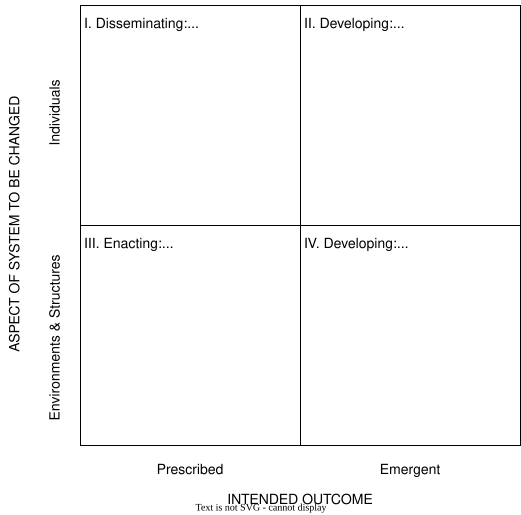

2 Goals, Strategies, and Tactics
deciding what to do and how to do it
2.1 Terminology
- A goal is something you want to accomplish
- “Make research fairer, more reliable, and more efficient”
- A strategy is a long-term plan to achieve that
- “Increase institutional and individual adoption of open science”
- A tactic is a specific action that fits into a larger strategic plan
- “Give researchers credit in performance reviews for creating open-access data sets”
- Over time, people often confuse strategies with goals
- Open science isn’t the goal: fairness, reliability, and efficiency are
- …and focus too narrowly on the tactics, losing sight of how they conflict with or contradict each other within the overall strategy
2.2 A Simple Conceptual Framework
- (Borrego and Henderson 2014) looked at how to increase adoption of evidence-based teaching strategies in STEM
- Prescribed (top-down) vs. emergent (bottom-up)
- Environments and structures (the system) vs. individuals

2.3 A Little Philosophy
- Isaiah Berlin defined two concepts of liberty
- Negative liberty is freedom from, i.e., there’s no rule that says you can’t do something
- Positive liberty is freedom to, i.e., you have the means and ability to pursue a goal
- Those with power will often cede negative liberty without supporting positive liberty
- Berlin and others also showed that absolute rights often conflict
- E.g., freedom of speech vs. freedom from harassment
- Easy to say “find a balance”, but much harder to agree on what that balance is
- Reform movements often tie themselves in knots over this
- Deny the conflict
- Try to formulate precise rules in advance
- Two kinds of knowledge (Scott 2020)
2.4 Sabina’s Goals and Strategy
- Sabina’s goal is to enable people to devote working hours to open source projects and DEI initiatives
- She doesn’t believe there is support for making either mandatory, so her strategy is to have both added to the performance review guidelines at her company as things that people can get credit for
- Sabina therefore fits in the Prescribed - Environments & Structures quadrant of Borrego and Henderson’s classification
- Her next step is to pick tactics
2.5 Exercises
2.5.1 Identify Goals, Strategies, and Tactics
In order to discourage researchers from salami slicing their papers, your university has decreed that people can only submit one paper per year for consideration by the promotion committee.
- Identify goals, strategies, and tactics in the statement above.
- Identify (at least) three ways in which this proposal can go wrong.
2.5.2 Choosing an Approach
- Which of these options do you think will work best in your environment?
- Which are you most comfortable with?
2.5.3 The Right Kind of Knowledge
- Describe the last time you tried to apply techne when the situation required metis.
- What have you learned in your current role that qualifies as techne? As metis?